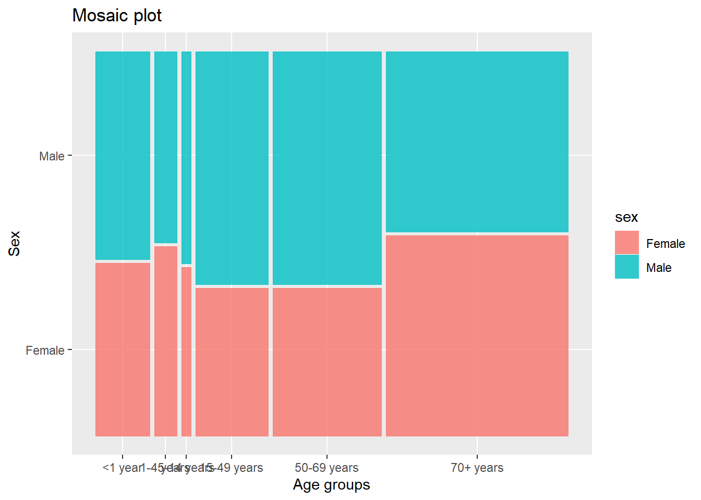

7 Cause vs (Age & Sex)
To understand the mortality rates of the people of different age groups, we downloaded datasets from the website http://ghdx.healthdata.org/gbd-results-tool and then plotted the basic plots relating the number of deaths to different age groups and sex.
As the ages were grouped this way in the actual dataset source, we preferred to take it this way. There is no particular reason for choosing unequal intervals of age.
The plots and information stated corresponds to data collectced from the year 1990 to 2016. Also, wherever average is mentioned, it is an average taken per annum from 1990 to 2017.
Reading data and forming dataframes
Lets start plotting!
From the plot, we see that the average number of deaths in the age group 70+ years is maximum and the average number of deaths in the age group 5-14 years is minimum. Also, it is interesting to see that the average number of deaths in the age groups 1-4 and 5-14 are less that the average number of deaths in age groups <1 year and 15-49 years. Overall, the average number of deaths decrease till 5-14 years age group and then increases.
Why are the values as shown? What are the major causes of death? How do deaths due to various causes vary with age? These are the questions we wish to answer on further exploring and visualizing the dataset.
Let us take a look at the causes of deaths (mentioned in the dataset).
This plot shows the causes of deaths vs average number of deaths. As we see, mental disorders cause the least number of deaths while cardiovascular diseases cause the maximum number of deaths.
The causes of death can be divided into three categories as follows: 1. injuries, 2. Communicable, maternal, neonatal, and nutritional diseases, and 3. Non-communicable diseases. Let us compare the number of deaths caused by each of these categories for the age groups.
Injuries
From this graph, we can see that more number of deaths due to injuries are in the 15-49 years age group. It seems a little natural that this number would be high because the width of this age group is high. Now, let us dive into what the specific causes were, under this subgroup of injuries.
This plot reveals a lot of information. Check the first three age groups. The people in these age groups and this category of causes of death (injuries) mostly died because of unintentional injuries. The common unintensional injuries include drowning, falls, poisoning, etc. As kids do not know how to handle the situations at their age, there are more chances of them losing life due to unintentional injuries as shown in the plot. Also, self-harm and interpersonal violence are very less in these three age groups. I think one of the most important reason for that is that people usually remain carefree during this age. They usually do not have any real life worries in life.
In contrast, the number of deaths due to self-harm and interpersonal violence is most in the age group of 15-49 years (middle-age group). The stress levels are pretty high in this age group. The reasons can be many ranging from financial problems to heart breaks.
In all the age groups, the average number of deaths due to self-harm and interpersoanl violence is less than the other two causes except for the age group 15-49 years.
Communicable, maternal, neonatal, and nutritional diseases
From this graph, we can see that maximum average number of deaths in this category are in the age group of <1 year and the minimum average number of deaths are in the age group 4-15 years. Let us explore further on what this category of causes includes and how each of the causes is responsible for deaths.
In the age group <1 year, the one cause that is responsible for maximum number of deaths is ‘Maternal and neonatal disorders’. This cause is prominnant only inn two age groups <1 year and 15-49 years. In all other age groups, the average number of deaths due to this is negligible. The age group 15-49 has the maximum average number of deaths dur to ‘HIV/AIDS and sexually transmitted infections’. In all the age groups, ‘Respiratory infections and tuberculosis’ seems to be one the main reasons of deaths under this category causes of deaths.
Non Communicable diseases
The trend in the plot is similar to the trend in the first plot. The average number of deaths decrease till the 5-14 years age group and then increases. The increase observed is very steep. The average number of deaths in the age group 70+ years is more than the sum of the average number of deaths of all other age groups under this category of causes of deaths. Let us explore further on what were the main causes under this category.
There seem to be less average number of deaths due to non-communicable diseases in the three age groups <1 year, 1-4 years, and 5-14 years. Cardiovascular diseases and Neoplasms are the two main non-communicale diseases that have recoded maximum average number of deaths in this category of causes of deaths.
Let us now check the average number of deaths and causes based on sex.
Comparing the two graphs above, we see that irrespective of the sex, the same pattern of decrese in the average number of deaths till 5-14 years age group and then increase till 70+ years age group is observed.

Here we come back to mosaic plots as it would be easy for comparisons. By looking at the graph we can easily compare the relative average number of deaths in males and females. But again, the accurate value is not known using mosaic plots.
This graph shows the average number of deaths of females and males by the causes of death under the injuries category. Overall, it can be observed that majority of the deaths were due to unintensional injuries. In all the three causes included in the graph, the average number of deaths of females is less than that of males. Deaths due to transport injuries are least among the three in case of females.
From this graph, we observe that the average number of deaths due to enteric infections, HIV/AIDS nad sexually transmitted infections, neglected tropical diseases and malaria, nutritional deficiencies, and other infectious diseases is almost equal in case of females and males.
Huge variation is observed in the average number of deaths due of maternal and neonatal disorders and due to respiratory infections and tuberculosis. In both cases, the average is more in males than that in females. In females, respiratory infections and tuberculosis causes the maximum average number of deaths in this category of deaths and in males, maternal and neonatal disorders cause the maximum average number of deaths.
In the category of non-communicable diseases, the average number of deaths due to diabetes is approximately equal in both females and males. Cardiovascular diseases and neoplasms (cancer) are the top two cause of death in both males and females under this category of causes of death. Both these have higher count in males than in females. The only disease that caused significantly higher deaths in females than in males under this category of causes of death is neurological disorders.
NOTE: We tried to include cleaveland dot plot / scatter plot, but felt that including bar charts is a better choice on comparing them because of the ease of comparison of values in the bar charts.